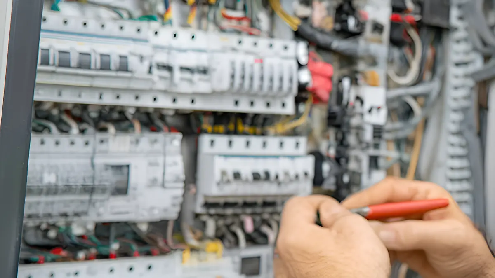
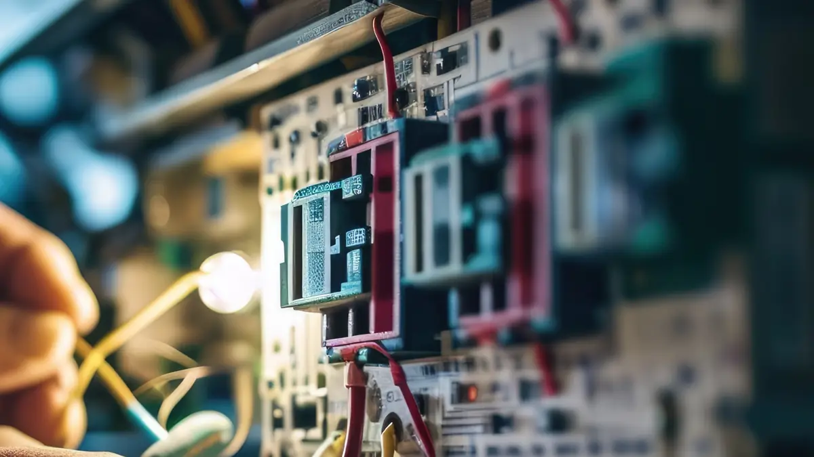

In short
An EICR (Electrical Installation Condition Report) is a formal inspection and test of the fixed electrics in a property. I check the wiring, consumer unit, sockets and lights, then give you a written report saying whether the installation is satisfactory and listing anything that needs attention. Landlords in England must have one at least every five years.
Who needs an EICR?
- Landlords. In England, privately rented homes need an EICR at least every five years and before a new tenancy starts. Tenants must be given a copy, and the local council can ask to see it.
- Buyers and sellers. A report isn't a legal requirement for a sale, but a recent one can answer a buyer's questions and avoid delays.
- Homeowners. Every ten years is the usual recommendation for a home you live in, or sooner if the property is older or you don't know when the wiring was last checked.
- Holiday lets and guest houses. These are usually inspected every five years, or when ownership changes.
- Shops, offices and other businesses. Most commercial premises are inspected at least every five years. See my page on commercial electrical work.

What happens during an EICR
- Visual inspection. I look over your consumer unit, sockets, switches, lights and any visible wiring for damage, wear and anything that doesn't meet current regulations.
- Testing. I test each circuit with calibrated test equipment. Parts of your property will be without power for short periods while I do this.
- The report. You get a written report showing what I inspected, what I found and an overall result: satisfactory or unsatisfactory.
- Next steps. I talk you through the results in plain English. If anything needs fixing, I'll quote for the work, and you're free to get another quote if you'd like.
What the codes in the report mean
Anything I find is given an observation code:
- C1: danger present. There is a risk of injury and immediate action is required.
- C2: potentially dangerous. Urgent remedial action is required.
- C3: improvement recommended. Not dangerous, but worth doing.
- FI: further investigation required without delay.
A report with any C1, C2 or FI code is unsatisfactory. C3 items on their own don't make a report unsatisfactory.

How long does an EICR take?
Most homes take a few hours, depending on the size of the property, the number of circuits and how easy everything is to reach. Larger or older properties take longer. I'll give you a realistic time when I quote.
What if the report is unsatisfactory?
It's common in older properties, and it can be fixed. Landlords must have the required work done within 28 days, or sooner if the report says so, and keep written confirmation. I can carry out the remedial work and issue the paperwork to show it's been done. If the report recommends a new fuse box, see consumer unit upgrades.
Smoke and carbon monoxide alarms for landlords
As well as an EICR at least every five years, landlords need smoke alarms that meet the current standard, covering each floor of the property, and carbon monoxide alarms where they are required. They can be battery powered. I can check what you have and fit anything that's missing. I carry out EICRs for letting agents as well as individual owners.
Common questions about EICRs
How often does a landlord need an EICR?
At least every five years in England, or sooner if the report recommends it. A copy must go to new tenants before they move in, and the council can ask to see it.
Is an EICR the same as an electrical safety certificate or landlord certificate?
People use those names for an EICR, although strictly it's a report rather than a certificate. It's the document landlords need to show the electrics have been inspected and tested.
How long does an EICR last?
The report gives a date for the next inspection: usually five years for a rented property and up to ten for a home you live in. If major work is done in the meantime, the new work comes with its own certificate.
Do I need an EICR to sell my house?
No, there is no legal requirement. But buyers and their solicitors sometimes ask about the electrics, and a recent report can help avoid delays.
Will the power be off during an EICR?
Parts of the property will be without power for short periods while circuits are tested. I'll tell you before I switch anything off and keep it as brief as I can.